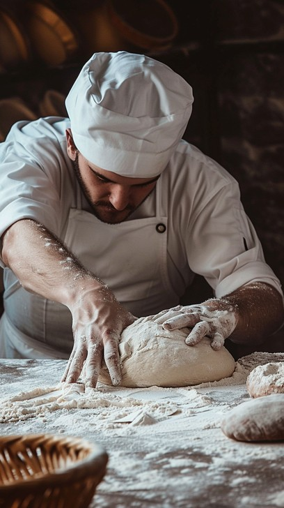

0 shortcuts
taken, ever
Our story
Proper food, cooked
with love.
We're a small, family-run lunch cafe hidden away on one of Carlisle's oldest lanes. Everything on your plate starts as raw ingredients in our kitchen each morning — the pastry rolled by hand, the soups simmered slowly, the cakes baked fresh.
Locals keep telling us it's the best comfort food in town. We just keep cooking the way we always have: from scratch, with love.
- Hand-rolled pastry & slow-simmered soups
- Cakes baked fresh every morning
- Bright, family-friendly dining room